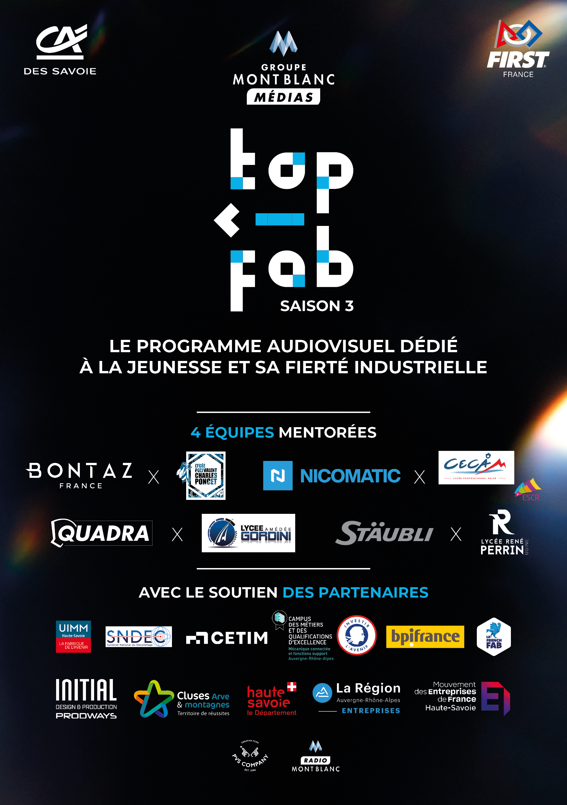

Lancement de la Saison 3 : l'aventure commence !

C'est officiel : le Lycée CECAM-ESCR et Nicomatic forment le binôme du Chablais pour la troisième saison de TOP FAB ! L'événement de lancement a réuni élèves, enseignants, ingénieurs et l'équipe Radio Mont Blanc pour marquer le coup d'envoi de cette aventure robotique.
Cette saison, le défi est de taille : concevoir, fabriquer et programmer un robot capable de concourir au FIRST Tech Challenge national à Lyon en mars 2026. Les élèves auront accès aux ateliers de Nicomatic, au savoir-faire de ses ingénieurs, et au soutien pédagogique de Robotique First France.
Les premières semaines seront consacrées à la découverte du kit FTC, à la formation aux outils de conception et à la définition de la stratégie de jeu. L'excitation est palpable — suivez notre blog pour ne rien manquer de la suite !